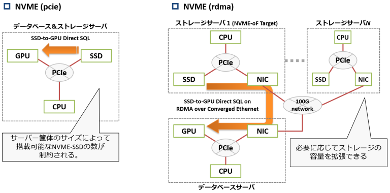

増え続けるログデータの管理、集計から解析・機械学習まで対応したデータ管理基盤

PG-Stromは最も広範に利用されているDBシステムの一つ、PostgreSQLの拡張モジュールで、数十TB・数百億件といった規模の大量データの管理、集計、加工といった処理を、GPUやNVME-SSDといった最新のハードウェアの能力を最大限に引き出して高速に実行するためのソフトウェアです。
PG-Stromの各種機能は特に、IoT/M2Mといった極めて大規模のデータを扱う領域のログ処理に重点を置いており、DBシステムへのデータの取り込み、データの集計や加工、および異常検知など機械学習アプリケーションとの連携を、シンプルなシングルノード構成のDBサーバで実現します。
これらの特性は、システムコストの削減や大量データの移動に伴う入出力時間の削減といった分かりやすい効果に加えて、全てのオペレーションが多くのエンジニアにとって使い慣れたPostgreSQLシステムの中で動作するため、これまでのスキルや運用ノウハウを引き継ぐ事が可能となり、アプリケーションの品質にも寄与します。
PG-Stromを構成する中核技術
GPUによるSQLの透過的な並列処理

GPUの特徴
GPUには数千個のプロセッサコアが搭載されており、メモリバスは数百GB/sもの帯域を持っています。これらのハードウェアリソースは並列計算において極めて有効に作用し、CPUと比べて非常に高い価格対性能比を発揮します。 GPUが得意とする並列計算の典型例は行列演算ですが、これは大量の均質なデータに対してそれぞれ同一の演算を行うという特徴があります。SQLにも類似の処理はいくつかあり、例えば全件スキャンにおいて各レコード毎にWHERE句の条件を評価するといった処理が典型です。
PG-Stromの概要
PG-StromはPostgreSQL向けの拡張モジュールで、集計・解析系のSQLワークロードをGPUの並列演算能力を活かして高速化するために開発されました。 CPU集約的なワークロードである、大量レコードのWHERE句、JOIN、GROUP BY処理のGPU実行に対応しており、PostgreSQLのクエリオプティマイザがGPUでの実行を選択した場合、PG-StromはSQLからJIT(Just-in-Time)コンパイルによってGPU命令バイナリを生成し、これをGPU側で非同期・並列実行します。
なぜPG-StromはPostgreSQLとシームレスな統合が可能なのか
- 共通のクエリ
- PG-StromはSQL構文がパースされた後の内部データ構造を参照し、GPUでのSQL実行が可能かどうかを判定します。 したがって、特別なSQL命令を与える必要はなく、"重い処理"だけを選択して透過的にGPUで実行する事ができます。
- 共通のデータ
- PG-StromはPostgreSQLのデータ構造／ストレージ形式をそのまま使用します。そのため、特別なテーブルへデータを移行したり、データ形式を変換したりする事なく利用する事ができます。
- 共通のフック
- PG-StromはPostgreSQLが標準でサポートする内部API(フック)のみを用いて実装されています。そのため、PostgreSQL本体へのパッチや特別な修正なしにインストールする事ができます。
ストレージの速度を最大化する SSD-to-GPU Direct SQL
HeteroDB社のユニーク技術、SSD-to-GPU Direct SQLテクノロジは、高速ストレージと並列プロセッサ間を直接繋ぐデータパスを構築し、NVME-SSDの物理限界に近い速度でSQLを実行し、通常は"計算のアクセラレータ"として利用されるGPUを用いてI/O中心のワークロードを高速化します。

コンセプト
ストレージ上のPostgreSQLデータブロックを読み出してCPU/RAMへ転送する前に、まずこれらのデータブロックをGPUへ転送してSQLワークロードを処理すれば、ほとんどの場合、データ量を小さくする事ができます。GROUP BYによる集約処理まで行う事ができれば、データサイズが1/1000やそれ以下という事も珍しくありません。 これは結果として、CPU/RAMへ転送すべきI/O量を減らす事となるため、I/Oが負荷の中心であるSQLワークロードであっても、GPUの手助けによって高速化が可能となるのです。
CPUの視点からNVMe-SSDとGPUの協調動作を眺めると、あたかもストレージ機器がSQLワークロードを解釈し、明らかに不要であるデータを削除、あるいは前処理を行った上で、データが読み出されているかのように見えるのです。
背景技術 - GPUDirect RDMA
この仕組みの基盤となっているのがNVIDIA GPUDirect RDMAで、GPUデバイスメモリ上の特定の領域をホストシステムの物理アドレス空間にマップするための機能です。GPUデバイスメモリが物理アドレスを持っていれば、PCIeデバイスとのDMAの際に、この領域をデータ転送先/元として使用する事ができるようになります。この時、データ転送はCPU/RAMを介さずにPCIeデバイス同士のピアツーピアで行われます。
GPUDirect RDMAは本来、MPI over Infinibandを実現するために開発された機能ですが、カスタムLinux kernel moduleがGPUデバイスメモリとPCIeデバイスとのDMAを適切に仲介すれば、他のPCIeデバイスにも応用する事ができます。 私たちはこれを、NVMe-SSDとGPUとの間のダイレクト読み出しに利用しています。
なぜGPUでI/Oワークロードを高速化できるのか？
- ダイレクト転送
- PostgreSQLが通常用いるファイルシステム経由のI/Oでは、ストレージからデータブロックを読み出し、アプリケーションのバッファにデータを転送するまでに何回もコピーを繰り返す事になり、これらはデータ量に比例してCPUサイクルを消費する事になります。
- SSD-to-GPUダイレクトSQL実行を用いた場合、SSDから読み出されたデータはGPUのバッファに直接、しかも非同期に転送されます。これにより、CPUやGPUをデータコピー処理から解放し、SQLワークロードの処理という本来の仕事に全ての処理サイクルを費やす事が可能となるのです。
- データ量を減らす
- 元々、PG-StromはPostgreSQLのレコード（行データ形式）に対して、GPU上でWHERE句、JOIN、GROUP BYを実行する機能を持っており、多くの場合、これらのSQL操作はレコード数を減少させる方向に作用するという特性があります。
- したがって、SSDから読み出したPostgreSQLデータブロックをGPUで前処理する事により、結果としてCPU/RAMにロードすべきI/O量を減少させる事が可能となります。そのため、NVME-SSDの限界性能に近い速度でデータブロックを読み出しているにも関わらず、CPUが実際に処理すべきレコード数は非常に少ないという状況を作り出すことができます。
Apache Arrow形式に対応した列データストア
多くのデータ分析系アプリケーションで利用されているApache Arrow形式の直接読み取りに対応することで、DBシステムへのデータ取り込みステップ自体を不要にし、また列データによる効率的なI/O処理により、ストレージの物理限界以上の実効SQL処理速度を実現します。

Apache Arrowとは列志向データ形式の一つで、多くのデータ分析アプリケーションが共通で利用するデータ交換用のフォーマットでもあります。そのため、C/C++やPythonなど、多くの言語でArrow形式を扱うためのライブラリが整備されています。
なぜデータのインポートが不要なのか?
PG-StromはPostgreSQLの外部テーブル（Foreign Table）機能を用いて、Arrow形式データファイルをあたかもPostgreSQLテーブルであるかのように読み出し、GPUで処理する事も可能です。
通常、外部からデータを取り込んでDBで集計・解析を行う場合には、インポート処理に相応の時間を要するのが通例でした。しかしPG-StromのArrow_Fdwの場合は、ファイルを外部テーブルとしてマップするだけなので、単純なファイルコピーだけで全て完了です。
なぜI/Oが効率的なのか?
集計・解析系の処理では、テーブルに定義された全ての列を参照することは稀です。通常は一部の列だけを参照すれば十分で、言い換えれば、被参照列以外のデータは「ゴミデータ」であり、I/Oの帯域を無用に圧迫する事になってしまっています。
PostgreSQLのような行データでは被参照列のみをストレージから抽出する事は困難ですが、列データの場合は、列ごとにデータが隣接配置されているため、被参照列のデータだけをストレージから読み出すよう、デバイスを制御するのは容易です。
NVME-oFによるスケーラブルなストレージ
IoT/M2M領域では顕著ですが、日々のログデータを蓄積するシステムでは、必要とするストレージ容量をシステム構築時に正確に見積もる事はなかなか困難な作業です。
ローカルのNVME-SSDをサーバに搭載した場合、システムに搭載可能なストレージの容量はサーバの筐体サイズによって自ずと規定されてしまいますが、高速ネットワーク越しにNVME-SSDを利用するNVME-over-Fabric技術を利用すれば、サーバの筐体サイズに関係なく、必要に応じてストレージを追加する事が可能です。
PG-StromのSSD-to-GPU Direct SQL技術はNVME-oFに対応しており、リモートのNVME-SSDからネットワークカードを介したRDMA(Remote Direct Memory Access)により、GPUへの直接データ転送を行うことが可能です。

利用シーンのご提案
ログデータ検索&集計 - セキュリティ用途

何かセキュリティ事故が発生した時、その影響範囲や原因を特定するための手掛かりとなるのは、ITシステムやネットワーク機器ののログです。 しかし多くの場合、未知の（未対策の）攻撃パターンに対してインデックス設定やパーティショニングなど、一般的なDBチューニングを事前に行うのは現実的ではない一方で、迅速な原因究明や事故レポートの作成が求められます。
PG-StromはGPUの計算能力とNVME-SSDの広帯域をフル活用して、ログデータの検索と、仮説検証のTry&Errorを実行する事ができるようになります。また、現場のエンジニアが使い慣れたPostgreSQLのSQL構文や演算子を利用できるため、即戦力化する事が可能です。
ビジネスインテリジェンス&レポーティング

ビジネスインテリジェンス(BI)やレポーティングで多用される集計系SQLワークロードは多数のCPU/GPUコアを使用する並列処理に向いており、ストレージには高いI/Oスループットが要求されます。 PG-Stromはこの種のワークロードに最適化されており、CPU/GPU/SSD全てのハードウェアリソースを駆使する事で高速な集計処理を実現します。
そのため、従来であれば高額なDWH専用機を導入したりクラスタ構成を組んでいたシステムを、シンプルなPostgreSQLベースの構成で代替する事が可能となり、システムの導入と運用に要する費用を削減する事が可能となります。
アノマリー検知

クレジットカードの不正使用や振り込め詐欺など、日々のトランザクションデータの中から犯罪性のある取引を見つけるには、“普段と違う”記録を、なるべく高い頻度で見つけだす必要があります。
PG-Stromを使えば、データベースに格納されたトランザクションデータに対して、直接、統計解析アルゴリズムに基づいた検査を実行する事ができます。これらのロジックはGPUにより高速に計算する事が可能で、また、In-database処理であるため、計算のたびにデータをエクスポートする必要もありません。
製品構成・仕様
- ハードウェア構成はHW-Validation-Listをご確認ください。
- OS: Red Hat Enterprise Linux
サブスクリプション製品
PG-Strom Enterprise Subscription (1GPU, 1年)
- サブスクリプションはPG-Stromが利用するGPUデバイスの数だけ必要です。
- 注意: システムに搭載されたGPUデバイスの数ではありません
- サブスクリプションには以下のものが含まれます
- 有償モジュールに対するライセンスキー
- 対象システムに対する技術サポートの提供
- ソフトウェアアップデートの提供
- サポート対象ハードウェアはHW-Validation-Listをご覧ください。
- 価格はオープンプライスです。ページ末尾のフォームよりお問い合わせください。